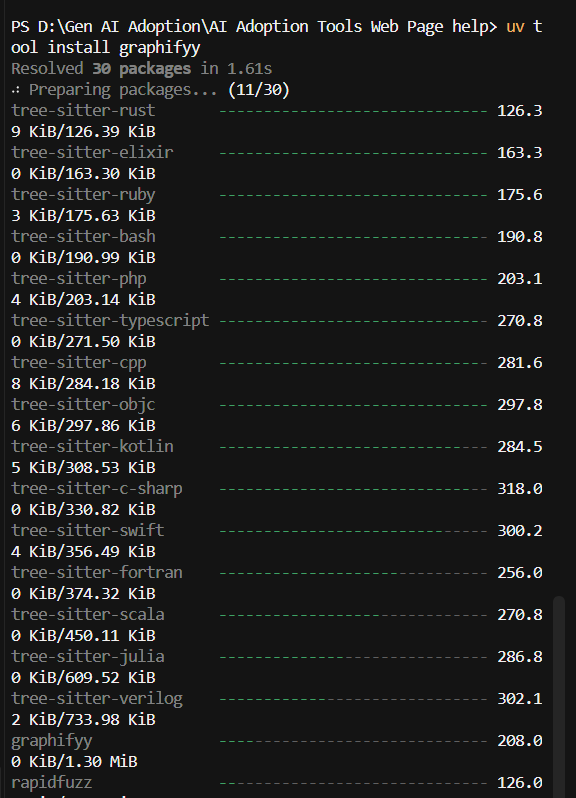
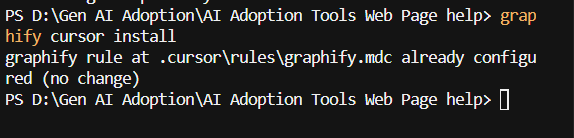

Cursor reads files. It doesn't read relationships. Graphify parses your repo into a queryable knowledge graph — functions, callers, imports, SQL tables, config keys. The model queries the graph instead of hunting. ~71× token reduction for relationship questions. On-device, no API keys, Apache 2.0.
Day-to-day commands
graphify query "which services write to the campaigns table?"
graphify path "ReportBuilder" "S3Uploader"
graphify export callflow-htmlWhere it earns its keep: onboarding new repos · impact analysis · fewer wrong cross-file edits · architecture diagrams. Pairs well with RTK — RTK compresses terminal output; Graphify cuts exploration tokens.
uv tool install graphifyyPyPI package is graphifyy (double-y). CLI command is graphify. If not found: uv tool update-shell → new terminal.
graphify cursor installCreates .cursor/rules/graphify.mdc with alwaysApply: true. Restart Cursor.
cd your-repo
graphify .PowerShell: use graphify . not /graphify . (slash = path separator). In Cursor chat you can use /graphify ..
graphify --version
Test-Path .\graphify-out\graph.json
graphify query "what is the entry point?"

Links: graphify.com · GitHub